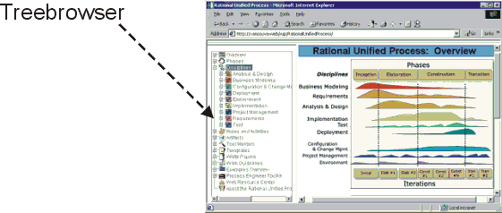

Toolkit:
Basic Modification of the Rational Unified Process
Overview
Generally a process should be configured in separate Web sites which reference the Rational Unified
Process (RUP), as described in Concepts:
Process Configuration.
However, in some situations, it may be useful to modify the RUP itself.
In general, the same methods are used as for working with project webs (see Toolkit:
Working with Project Webs). However, the following specific guidelines
apply to modifications to the RUP.
You can customize the RUP by modifying the treebrowser
in the left frame, and adding references to external papers, your own guidelines,
your own templates, and so on. Modifications of this type are easy to do and
make upgrades simple to perform when new versions of the RUP are released. See Toolkit: Modifying the Treebrowser.

You can customize the treebrowser in the RUP
online
You can further integrate your own pages into the RUP by
making your pages:
- Referenced from the index by generating a new index
- Searchable using the search functionality by generating a new search
database
- Listed on the Site Map by generating a new Site Map
To integrate your pages in the index, search database, and Site Map place your own pages in a folder inside the folder where the
RUP is installed, that is, the folder where the index.htm resides. The Toolkit:
Preparing for Publication describes how to generate a new index, new
search database, and new Site Map. The "KeyWordIndex"
describes how to insert keywords for the index. To understand and modify the
layout of the Site Map, see the SiteMap.
Another way to modify the RUP is to edit its layout and
format to conform to your company's style and formats. For example, you can
change the color on the banners or change the buttons, bullets, and so on. These
kinds of changes are simple to do and make it easy to upgrade to new versions.
See Toolkit: Rational Unified
Process Styleguide for more information about how to change the layout.
When you have modified the RUP Web site, you might also want to redirect any
feedback on the Web site to go to your process engineers instead of to the rup_feedback
e-mail address at Rational Software. See Toolkit:
Basic Setup of Project Webs, section Enable user feedback for instructions
on how to redirect feedback.
A more advanced way to modify the RUP is to edit pages, diagrams, and so on to describe
exactly how your organization works. However, this has several disadvantages—it
makes it more difficult to upgrade and it's no longer obvious to users which
parts have been customized. At times, you may want to emphasize those parts of
the process that you've chosen to customize, as opposed to those parts that you
haven't. If you do these kinds of changes, you should put a baseline copy of the
RUP online under configuration management. Process
engineers can modify it to incorporate changes, such as:
- Add, expand, modify or remove steps in activities.
- Add checkpoints to the review activities based on experience, especially
for problems discovered late in the development cycle.
- Add guidelines based on discoveries made in past projects.
- Tailor the templates by adding your company logo and specific header, and
footer, information throughout the document for easy identification, and by
customizing the cover page to make it specific to your organization.
- Add tool mentors as needed.
Some changes are harder to make than others, such as:
- Changing process terminology because it would have sweeping effects.
- Using another process model.
- Changing the discipline structure.
Note that these kinds of changes will affect the corresponding Development
Case, and will make the reconciliation with future releases of the RUP more difficult.
Copyright
© 1987 - 2001 Rational Software Corporation
|  Process Engineer Toolkit >
Process Engineer Toolkit >
 Basic Modification of the Rational Unified Process
Basic Modification of the Rational Unified Process